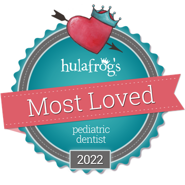

Pediatric dentistry · Treasure Coast
A trip to the dentist shouldn’t be the scary part of a child’s week.
Almost three decades of pediatric dentistry in Stuart, in English and Spanish — exams, cleanings, fillings and sedation, with parents welcome in the room for all of it.


The reviews
956 Google reviews 5.0 average
Google reviews of the practice.
Your dentists
Dr. Nancy H. Torres
Dr. Julie A. Sugar
Mother and daughter, and the two dentists here — meet the team.
- Mon–Thu 8:00am–5:00pm
- PPO plans and DentaQuest Healthy Kids
- Hablamos español
- Sugar bugs
- Funny gas
- Tooth vitamins
- Sleepy juice
- The cherry on top
How we talk about it
Sugar bugs, tooth vitamins, funny gas.
Every practice has its own vocabulary. Ours is built so a child can follow a visit — and a parent can still tell exactly what is happening.
-
01
Preventing sugar bugs
An exam and digital tooth pictures every six months. A cleaning with whatever toothpaste flavor your child picks. Fluoride — our tooth vitamins — and sealants to keep the sugar bugs out.
What that includes -
02
Treating sugar bugs
When one gets past the brushing: tooth-colored fillings, crowns, extractions and space maintainers. Numbing starts with buffered lidocaine, and Oraverse brings the feeling back in about 45 minutes.
What that includes -
03
Lights out
For bigger jobs: funny gas, oral sedation, or IV sedation with a pediatric anesthesiologist from PDAA — all of it here, in our own office.
What that includes
The mother–daughter duo
One is the mother. One is the daughter. Both are the dentist.
Dr. Nancy H. Torres and Dr. Julie A. Sugar are the two dentists here, and one of them is the other’s mother. The practice itself has almost three decades behind it.
It changes the room. A nervous child gets a dentist who has known the other dentist her whole life. A nervous parent gets to come back and watch — that’s the open-door policy, and it applies to every visit.
- Dr. Nancy H. Torres
- Dentist
- Dr. Julie A. Sugar
- Dentist

The team, on the lawn outside the office.
What sets us apart
Three things, and none of them is small.

-
Personalized touch
Video games and a tablet at every chair, plus prizes and stickers for the walk out. Something to do with their hands while the work gets done.
-
Bilingual
English and Spanish. Dr. Sugar, Dr. Torres and some of our team are fluent, so the conversation happens in the language a family thinks in.
-
Open-door policy
Every parent is welcome in the back, for every visit. Nobody waits in the lobby wondering what is going on.
Money
Money, without the runaround.
Two ways to do this: insurance, or a flat yearly membership for families without it.
Insurance and payment
Three ways to cover the cost of a visit.
- All major PPO insurance plans
- DentaQuest Healthy Kids
- CareCredit
Not sure what your plan covers? Call us at (772) 283-1230 — it is faster than reading the booklet.
The self-pay membership
For families without insurance: one year of coverage, paid up front, in three age bands.
- 0–2 years $250
- 3–12 years $350
- 13+ years $400
Coverage begins when we receive the signed contract and full payment, and runs for one year from that date. Non-refundable, non-transferable, and not available to insured patients. The two routine cleanings are booked by the family.
Visit us
On Coconut Ave, in Stuart.
Pediatric dentistry for the Treasure Coast — directions, hours and the number to call.

Address
413 Coconut AveStuart, FL 34996
Hours
- Monday–Thursday
- 8:00am–5:00pm
- Friday–Sunday
- Closed
Questions parents actually ask
The short answers.
If your question is not here, the phone is faster than a form: (772) 283-1230.
What age should a child first see a dentist?
Children's Dentistry of Stuart treats children from infancy through young adulthood, up to age 21. The practice's routine schedule is a dental examination every six months, and an infant is booked as a new patient exam so there is time to settle in.
Does Children's Dentistry of Stuart take my dental insurance?
The practice accepts all major PPO dental plans and DentaQuest Healthy Kids, and also accepts CareCredit. Because benefits differ by plan and by family, the practice asks you to call (772) 283-1230 so a team member can check your specific coverage before the visit.
What if we do not have dental insurance?
There is a self-pay membership: $250 a year for ages 0 to 2, $350 a year for ages 3 to 12, and $400 a year for ages 13 and up. Coverage begins once the signed contract and full payment are received, runs for one year, and is non-refundable and non-transferable. Patients with insurance are not eligible, and it is up to the family to schedule the two routine cleanings each year.
Can I stay in the room with my child?
Yes. The practice has an open-door policy: every parent is welcome to come into the back with their child for every visit, not only the first one.
Do the dentists speak Spanish?
Yes. Dr. Sugar, Dr. Torres and several members of the team are fluent in both English and Spanish, so the conversation can happen in the language a family thinks in.
What sedation options are available for a nervous child?
Three, in increasing order: nitrous oxide ("funny gas"), oral sedation taken as a prescription in the office, and IV sedation with a pediatric anesthesiologist from PDAA, given in the practice's own office. The team also buffers the local anaesthetic so the numbing does not sting, and uses Oraverse to bring feeling back in about 45 minutes instead of several hours.
Where is the office and when is it open?
The practice is at 413 Coconut Ave, Stuart, FL 34996, open Monday to Thursday from 8:00am to 5:00pm and closed Friday through Sunday. The phone number is (772) 283-1230. Confirm current hours with the practice before you travel, because archived versions of the site list a 4:30pm close.
How do I book a first appointment?
Use the appointment form on this site or call (772) 283-1230. The form requests a time; the front desk calls you back to confirm it. If your child is in pain, has facial swelling, or has knocked out a tooth, call instead of using the form.

Bring them in. We’ll take it from the door.
Book online in a minute, or call and talk to a person — English or Spanish. First visits, cleanings, second opinions on a treatment plan: all of it starts the same way.